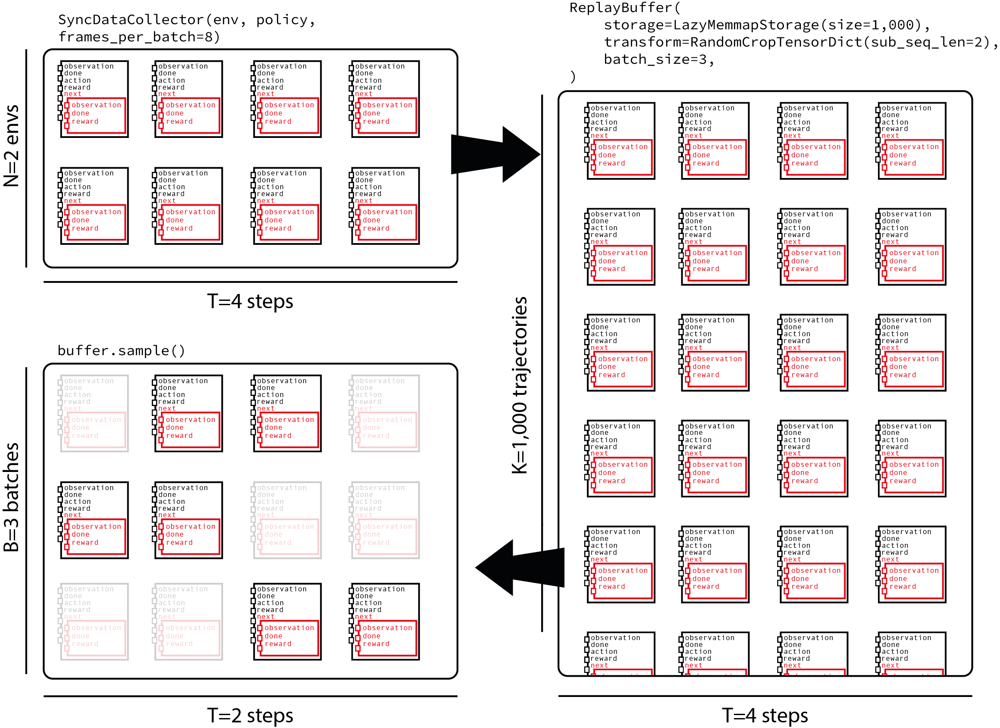

备注
点击此处下载完整示例代码
TorchRL 目标：编写 DDPG 损失函数代码
创建时间：2025 年 4 月 1 日 | 最后更新时间：2025 年 4 月 1 日 | 最后验证：未验证
作者：Vincent Moens
概述 ¶
TorchRL 将 RL 算法的训练分解为多个部分，这些部分将在您的训练脚本中组装：环境、数据收集和存储、模型以及最终的损失函数。
TorchRL 的损失（或“目标”）是包含可训练参数（策略和价值模型）的状态对象。本教程将指导您使用 TorchRL 从头开始编写损失函数的步骤。
为了达到这个目的，我们将专注于 DDPG，这是一个相对简单的编码算法。深度确定性策略梯度（DDPG）是一种简单的连续控制算法。它包括学习一个动作-观察对的参数化值函数，然后学习一个策略，该策略根据给定的观察输出最大化此值函数的动作。
您将学习的内容：
如何编写损失模块并自定义其值估计器；
如何在 TorchRL 中构建环境，包括转换（例如，数据归一化）和并行执行；
如何设计策略和价值网络；
如何高效地从您的环境中收集数据并将它们存储在重放缓冲区中；
如何在回放缓冲区中存储轨迹（而非转换）；
如何评估你的模型。
前提条件 ＿
本教程假设你已经完成了 PPO 教程，该教程概述了 TorchRL 组件和依赖项，例如 tensordict.TensorDict 和 tensordict.nn.TensorDictModules ，尽管在没有深入了解这些类的情况下，它也应该足够清晰易懂。
备注
我们的目标不是提供一个 SOTA 算法的实现，而是提供一个关于 TorchRL 损失实现和在此算法上下文中要使用的库功能的概述。
导入和设置
%%bash pip3 install torchrl mujoco glfw
import torch
import tqdm
如果可用，我们将使用 CUDA 执行策略
is_fork = multiprocessing.get_start_method() == "fork"
device = (
torch.device(0)
if torch.cuda.is_available() and not is_fork
else torch.device("cpu")
)
collector_device = torch.device("cpu") # Change the device to ``cuda`` to use CUDA
TorchRL LossModule¶
TorchRL 提供了一系列用于训练脚本中的损失函数。目标是拥有易于重用/交换的损失函数，并且具有简单的签名。
TorchRL 损失函数的主要特点包括：
它们是状态对象：它们包含可训练参数的副本，以便
loss_module.parameters()提供训练算法所需的一切。他们遵循
TensorDict约定：torch.nn.Module.forward()方法将接收一个包含所有必要信息的 TensorDict 作为输入，以返回损失值。>>> data = replay_buffer.sample() >>> loss_dict = loss_module(data)
它们输出一个
tensordict.TensorDict实例，其中损失值被写入"loss_<smth>"下，smth是一个描述损失的字符串。TensorDict中的其他键可能是训练期间记录的有用指标。备注
我们返回独立损失的原因是让用户可以为不同的参数集使用不同的优化器，例如。简单地对损失求和即可。
>>> loss_val = sum(loss for key, loss in loss_dict.items() if key.startswith("loss_"))
__init__ 方法
所有损失函数的父类是 LossModule 。与其他库组件一样，它的 forward() 方法期望输入一个从经验重放缓冲区或任何类似数据结构中采样的 tensordict.TensorDict 实例。使用这种格式可以使模块跨模态重用，或在模型需要读取多个条目等复杂设置中使用。换句话说，它允许我们编写一个损失模块，该模块对输入的数据类型一无所知，并且只关注运行损失函数的基本步骤。
为了使教程尽可能具有教育意义，我们将独立展示类的每个方法，并在稍后阶段填充该类。
让我们从 __init__() 方法开始。DDPG 旨在通过简单的策略解决控制任务：训练一个策略来输出最大化值网络预测的价值的动作。因此，我们的损失模块需要在构造函数中接收两个网络：一个演员网络和一个值网络。我们期望这两个都是 TensorDict 兼容的对象，例如 tensordict.nn.TensorDictModule 。我们的损失函数需要计算目标值并将值网络拟合到这个值，并生成一个动作，将策略拟合到使其价值估计最大化的程度。
LossModule.__init__() 方法的关键步骤是调用 convert_to_functional() 。此方法将从模块中提取参数并将其转换为功能模块。严格来说，这不是必要的，一个人完全可以完美地编写所有损失函数而无需它。然而，我们鼓励使用它，原因如下。
火炬 RL 这样做的原因是，强化学习算法通常使用不同的参数集执行相同的模型，这些参数集被称为“可训练”和“目标”参数。 “可训练”参数是优化器需要拟合的参数。 “目标”参数通常是前者的副本，但存在一些时间延迟（绝对或通过移动平均稀释）。 这些目标参数用于计算与下一个观察值相关的值。 使用一组不与当前配置完全匹配的目标参数来计算值模型的优势之一是，它们提供了计算值函数的悲观界限。 注意下面的 create_target_params 关键字参数：这个参数告诉 convert_to_functional() 方法在损失模块中创建一组用于目标值计算的参数。 如果设置为 False （例如，请参阅演员网络），则 target_actor_network_params 属性仍然可以访问，但这将只返回演员参数的分离版本。
之后，我们将看到在 TorchRL 中如何更新目标参数。
from tensordict.nn import TensorDictModule, TensorDictSequential
def _init(
self,
actor_network: TensorDictModule,
value_network: TensorDictModule,
) -> None:
super(type(self), self).__init__()
self.convert_to_functional(
actor_network,
"actor_network",
create_target_params=True,
)
self.convert_to_functional(
value_network,
"value_network",
create_target_params=True,
compare_against=list(actor_network.parameters()),
)
self.actor_in_keys = actor_network.in_keys
# Since the value we'll be using is based on the actor and value network,
# we put them together in a single actor-critic container.
actor_critic = ActorCriticWrapper(actor_network, value_network)
self.actor_critic = actor_critic
self.loss_function = "l2"
值估计器损失方法
在许多强化学习算法中，值网络（或 Q 值网络）是基于经验值估计进行训练的。这可以通过自举（TD(0)，低方差，高偏差）来实现，这意味着目标值是通过下一个奖励来获得的，没有其他任何信息，或者可以通过蒙特卡洛估计（TD(1)）来获得，在这种情况下，将使用即将到来的整个奖励序列（高方差，低偏差）。还可以使用中间估计器（TD(\(\lambda\)))来折衷偏差和方差。TorchRL 通过 ValueEstimators 枚举类简化了使用一个或另一个估计器的过程，该枚举类包含指向所有实现的价值估计器的指针。让我们在这里定义默认的价值函数。我们将采用最简单的版本（TD(0)），稍后我们将展示如何进行更改。
from torchrl.objectives.utils import ValueEstimators
default_value_estimator = ValueEstimators.TD0
我们还需要向 DDPG 提供一些指令，说明如何根据用户查询构建价值估计器。根据提供的估计器，我们将构建用于训练时的相应模块：
from torchrl.objectives.utils import default_value_kwargs
from torchrl.objectives.value import TD0Estimator, TD1Estimator, TDLambdaEstimator
def make_value_estimator(self, value_type: ValueEstimators, **hyperparams):
hp = dict(default_value_kwargs(value_type))
if hasattr(self, "gamma"):
hp["gamma"] = self.gamma
hp.update(hyperparams)
value_key = "state_action_value"
if value_type == ValueEstimators.TD1:
self._value_estimator = TD1Estimator(value_network=self.actor_critic, **hp)
elif value_type == ValueEstimators.TD0:
self._value_estimator = TD0Estimator(value_network=self.actor_critic, **hp)
elif value_type == ValueEstimators.GAE:
raise NotImplementedError(
f"Value type {value_type} it not implemented for loss {type(self)}."
)
elif value_type == ValueEstimators.TDLambda:
self._value_estimator = TDLambdaEstimator(value_network=self.actor_critic, **hp)
else:
raise NotImplementedError(f"Unknown value type {value_type}")
self._value_estimator.set_keys(value=value_key)
make_value_estimator 方法可以调用，但不一定需要调用：如果不调用， LossModule 将使用其默认估计器查询此方法。
行为者损失方法 ¶
强化学习算法的核心是演员的训练损失。在 DDPG 的情况下，这个函数非常简单：我们只需要计算使用策略计算出的动作的值，并优化演员权重以最大化这个值。
在计算这个值时，我们必须确保将值参数从图中取出，否则演员和值损失将会混淆。为此，可以使用 hold_out_params() 函数。
def _loss_actor(
self,
tensordict,
) -> torch.Tensor:
td_copy = tensordict.select(*self.actor_in_keys)
# Get an action from the actor network: since we made it functional, we need to pass the params
with self.actor_network_params.to_module(self.actor_network):
td_copy = self.actor_network(td_copy)
# get the value associated with that action
with self.value_network_params.detach().to_module(self.value_network):
td_copy = self.value_network(td_copy)
return -td_copy.get("state_action_value")
值损失方法
现在我们需要优化我们的值网络参数。为此，我们将依赖我们类中的值估计器：
from torchrl.objectives.utils import distance_loss
def _loss_value(
self,
tensordict,
):
td_copy = tensordict.clone()
# V(s, a)
with self.value_network_params.to_module(self.value_network):
self.value_network(td_copy)
pred_val = td_copy.get("state_action_value").squeeze(-1)
# we manually reconstruct the parameters of the actor-critic, where the first
# set of parameters belongs to the actor and the second to the value function.
target_params = TensorDict(
{
"module": {
"0": self.target_actor_network_params,
"1": self.target_value_network_params,
}
},
batch_size=self.target_actor_network_params.batch_size,
device=self.target_actor_network_params.device,
)
with target_params.to_module(self.actor_critic):
target_value = self.value_estimator.value_estimate(tensordict).squeeze(-1)
# Computes the value loss: L2, L1 or smooth L1 depending on `self.loss_function`
loss_value = distance_loss(pred_val, target_value, loss_function=self.loss_function)
td_error = (pred_val - target_value).pow(2)
return loss_value, td_error, pred_val, target_value
向前调用中把事物组合起来
唯一缺少的部分是前向方法，它将粘合值和演员损失，收集成本值并将它们写入用户接收到的 TensorDict 中。
from tensordict import TensorDict, TensorDictBase
def _forward(self, input_tensordict: TensorDictBase) -> TensorDict:
loss_value, td_error, pred_val, target_value = self.loss_value(
input_tensordict,
)
td_error = td_error.detach()
td_error = td_error.unsqueeze(input_tensordict.ndimension())
if input_tensordict.device is not None:
td_error = td_error.to(input_tensordict.device)
input_tensordict.set(
"td_error",
td_error,
inplace=True,
)
loss_actor = self.loss_actor(input_tensordict)
return TensorDict(
source={
"loss_actor": loss_actor.mean(),
"loss_value": loss_value.mean(),
"pred_value": pred_val.mean().detach(),
"target_value": target_value.mean().detach(),
"pred_value_max": pred_val.max().detach(),
"target_value_max": target_value.max().detach(),
},
batch_size=[],
)
from torchrl.objectives import LossModule
class DDPGLoss(LossModule):
default_value_estimator = default_value_estimator
make_value_estimator = make_value_estimator
__init__ = _init
forward = _forward
loss_value = _loss_value
loss_actor = _loss_actor
现在我们有了损失，我们可以用它来训练一个策略来解决控制任务。
环境
在大多数算法中，首先需要关注的是环境的构建，因为它决定了训练脚本的其余部分。
在这个例子中，我们将使用 "cheetah" 任务。目标是让半野兔尽可能跑得快。
在 TorchRL 中，可以通过依赖 dm_control 或 gym 来创建这样的任务：
env = GymEnv("HalfCheetah-v4")
或者
env = DMControlEnv("cheetah", "run")
默认情况下，这些环境禁用渲染。从状态训练通常比从图像训练更容易。为了简化问题，我们只关注从状态学习。要将像素传递给由 env.step() 收集的 tensordicts ，只需将 from_pixels=True 参数传递给构造函数即可：
env = GymEnv("HalfCheetah-v4", from_pixels=True, pixels_only=True)
我们编写了一个 make_env() 辅助函数，该函数将创建一个具有上述两种后端之一（ dm-control 或 gym ）的环境。
from torchrl.envs.libs.dm_control import DMControlEnv
from torchrl.envs.libs.gym import GymEnv
env_library = None
env_name = None
def make_env(from_pixels=False):
"""Create a base ``env``."""
global env_library
global env_name
if backend == "dm_control":
env_name = "cheetah"
env_task = "run"
env_args = (env_name, env_task)
env_library = DMControlEnv
elif backend == "gym":
env_name = "HalfCheetah-v4"
env_args = (env_name,)
env_library = GymEnv
else:
raise NotImplementedError
env_kwargs = {
"device": device,
"from_pixels": from_pixels,
"pixels_only": from_pixels,
"frame_skip": 2,
}
env = env_library(*env_args, **env_kwargs)
return env
转换
现在我们有了基本环境，我们可能想修改其表示，使其更适合策略。在 TorchRL 中，转换被附加到基本环境的一个专用 torchr.envs.TransformedEnv 类中。
在 DDPG 中，通常使用某种启发式值对奖励进行缩放。在这个例子中，我们将奖励乘以 5。
如果我们使用
dm_control，那么在双精度数值的模拟器和单精度数值的脚本之间建立接口也很重要。这种转换是双向的：当调用env.step()时，我们的动作需要以双精度表示，输出也需要转换为单精度。DoubleToFloat转换正是这样做的：in_keys列表指的是需要从双精度转换为浮点数的键，而in_keys_inv指的是在传递给环境之前需要转换为双精度的键。我们使用
CatTensors转换将状态键连接在一起。最后，我们还留有对状态进行归一化的可能性：我们将在稍后处理归一化常数的计算。
from torchrl.envs import (
CatTensors,
DoubleToFloat,
EnvCreator,
InitTracker,
ObservationNorm,
ParallelEnv,
RewardScaling,
StepCounter,
TransformedEnv,
)
def make_transformed_env(
env,
):
"""Apply transforms to the ``env`` (such as reward scaling and state normalization)."""
env = TransformedEnv(env)
# we append transforms one by one, although we might as well create the
# transformed environment using the `env = TransformedEnv(base_env, transforms)`
# syntax.
env.append_transform(RewardScaling(loc=0.0, scale=reward_scaling))
# We concatenate all states into a single "observation_vector"
# even if there is a single tensor, it'll be renamed in "observation_vector".
# This facilitates the downstream operations as we know the name of the
# output tensor.
# In some environments (not half-cheetah), there may be more than one
# observation vector: in this case this code snippet will concatenate them
# all.
selected_keys = list(env.observation_spec.keys())
out_key = "observation_vector"
env.append_transform(CatTensors(in_keys=selected_keys, out_key=out_key))
# we normalize the states, but for now let's just instantiate a stateless
# version of the transform
env.append_transform(ObservationNorm(in_keys=[out_key], standard_normal=True))
env.append_transform(DoubleToFloat())
env.append_transform(StepCounter(max_frames_per_traj))
# We need a marker for the start of trajectories for our Ornstein-Uhlenbeck (OU)
# exploration:
env.append_transform(InitTracker())
return env
并行执行 ¶
以下辅助函数允许我们并行运行环境。并行运行环境可以显著提高收集吞吐量。当使用转换后的环境时，我们需要选择是希望为每个环境单独执行转换，还是集中数据批量转换。两种方法都易于编码：
env = ParallelEnv(
lambda: TransformedEnv(GymEnv("HalfCheetah-v4"), transforms),
num_workers=4
)
env = TransformedEnv(
ParallelEnv(lambda: GymEnv("HalfCheetah-v4"), num_workers=4),
transforms
)
为了利用 PyTorch 的向量化能力，我们采用第一种方法：
def parallel_env_constructor(
env_per_collector,
transform_state_dict,
):
if env_per_collector == 1:
def make_t_env():
env = make_transformed_env(make_env())
env.transform[2].init_stats(3)
env.transform[2].loc.copy_(transform_state_dict["loc"])
env.transform[2].scale.copy_(transform_state_dict["scale"])
return env
env_creator = EnvCreator(make_t_env)
return env_creator
parallel_env = ParallelEnv(
num_workers=env_per_collector,
create_env_fn=EnvCreator(lambda: make_env()),
create_env_kwargs=None,
pin_memory=False,
)
env = make_transformed_env(parallel_env)
# we call `init_stats` for a limited number of steps, just to instantiate
# the lazy buffers.
env.transform[2].init_stats(3, cat_dim=1, reduce_dim=[0, 1])
env.transform[2].load_state_dict(transform_state_dict)
return env
# The backend can be ``gym`` or ``dm_control``
backend = "gym"
备注
将多个步骤合并为一个动作，如果大于 1，则需要调整其他帧计数（例如，frames_per_batch，total_frames），以确保实验中收集的帧数总数一致。这一点很重要，因为提高帧跳过但保持总帧数不变可能会给人一种作弊的印象：所有比较的东西，使用帧跳过为 2 和帧跳过为 1 收集的 10M 元素的数据集，实际上与环境交互的比例为 2:1！简而言之，当处理帧跳过时，应该小心处理训练脚本的帧计数，因为这可能导致训练策略之间的比较存在偏差。
扩展奖励有助于我们控制信号幅度，从而实现更有效的学习。
reward_scaling = 5.0
我们还定义了何时截断轨迹。对于 cheetah 任务，使用 1000 步（如果 frame-skip = 2 则为 500 步）是一个不错的选择：
max_frames_per_traj = 500
观测的归一化
为了计算归一化统计量，我们在环境中运行任意数量的随机步骤，并计算收集到的观察值的平均值和标准差。可以使用 ObservationNorm.init_stats() 方法进行此操作。为了获取汇总统计量，我们创建一个虚拟环境，并运行给定数量的步骤，收集给定数量的步骤中的数据，并计算其汇总统计量。
def get_env_stats():
"""Gets the stats of an environment."""
proof_env = make_transformed_env(make_env())
t = proof_env.transform[2]
t.init_stats(init_env_steps)
transform_state_dict = t.state_dict()
proof_env.close()
return transform_state_dict
归一化统计量
使用 ObservationNorm 进行统计计算所使用的随机步骤数量
init_env_steps = 5000
transform_state_dict = get_env_stats()
每个数据收集器中的环境数量
env_per_collector = 4
我们将之前计算的统计数据传递给环境以归一化输出：
parallel_env = parallel_env_constructor(
env_per_collector=env_per_collector,
transform_state_dict=transform_state_dict,
)
from torchrl.data import CompositeSpec
构建模型 ¶
我们现在转向模型的设置。正如我们所见，DDPG 需要一个价值网络，该网络被训练来估计状态-动作对的价值，以及一个参数化的演员，该演员学习如何选择最大化这一价值的动作。
回想一下，构建 TorchRL 模块需要两个步骤：
编写将要用作网络的
torch.nn.Module，将网络包裹在
tensordict.nn.TensorDictModule中，其中数据流通过指定输入和输出键来处理。
在更复杂的场景中，也可以使用 tensordict.nn.TensorDictSequential 。
Q-值网络被包裹在自动设置 out_keys 为 "state_action_value （用于 q 值网络）和 state_value （用于其他价值网络）的 ValueOperator 中。
TorchRL 提供了原始论文中提出的 DDPG 网络的内置版本。这些可以在 DdpgMlpActor 和 DdpgMlpQNet 下找到。
由于我们使用懒加载模块，在能够将策略从设备移动到设备并执行其他操作之前，有必要将懒加载模块实例化。因此，运行带有少量数据的模块是一种良好的实践。为此，我们从环境规格生成假数据。
from torchrl.modules import (
ActorCriticWrapper,
DdpgMlpActor,
DdpgMlpQNet,
OrnsteinUhlenbeckProcessModule,
ProbabilisticActor,
TanhDelta,
ValueOperator,
)
def make_ddpg_actor(
transform_state_dict,
device="cpu",
):
proof_environment = make_transformed_env(make_env())
proof_environment.transform[2].init_stats(3)
proof_environment.transform[2].load_state_dict(transform_state_dict)
out_features = proof_environment.action_spec.shape[-1]
actor_net = DdpgMlpActor(
action_dim=out_features,
)
in_keys = ["observation_vector"]
out_keys = ["param"]
actor = TensorDictModule(
actor_net,
in_keys=in_keys,
out_keys=out_keys,
)
actor = ProbabilisticActor(
actor,
distribution_class=TanhDelta,
in_keys=["param"],
spec=CompositeSpec(action=proof_environment.action_spec),
).to(device)
q_net = DdpgMlpQNet()
in_keys = in_keys + ["action"]
qnet = ValueOperator(
in_keys=in_keys,
module=q_net,
).to(device)
# initialize lazy modules
qnet(actor(proof_environment.reset().to(device)))
return actor, qnet
actor, qnet = make_ddpg_actor(
transform_state_dict=transform_state_dict,
device=device,
)
探索 §
如原始论文中建议的，将策略传递到 OrnsteinUhlenbeckProcessModule 探索模块。让我们定义 OU 噪声达到其最小值之前的帧数。
annealing_frames = 1_000_000
actor_model_explore = TensorDictSequential(
actor,
OrnsteinUhlenbeckProcessModule(
spec=actor.spec.clone(),
annealing_num_steps=annealing_frames,
).to(device),
)
if device == torch.device("cpu"):
actor_model_explore.share_memory()
数据收集器
TorchRL 提供了专门的类来帮助您通过在环境中执行策略来收集数据。这些“数据收集器”迭代地计算在给定时间要执行的动作，然后在环境中执行一步并按要求重置。数据收集器旨在帮助开发者紧密控制每批数据的帧数，控制这种收集的（a）同步性质以及分配给数据收集的资源（例如 GPU、工作进程数量等）。
在这里，我们将使用 SyncDataCollector ，一个简单、单进程的数据收集器。TorchRL 还提供其他收集器，如 MultiaSyncDataCollector ，它以异步方式执行回滚（例如，在策略被优化时收集数据，从而解耦训练和数据收集）。
需要指定的参数是：
一个环境工厂或一个环境
政策
该收集器被视为空之前的总帧数
每条轨迹的最大帧数（适用于非终止环境，如
dm_control环境）。备注
传递给收集器的
max_frames_per_traj将具有在推理环境中注册一个新的StepCounter转换的效果。我们可以像在这个脚本中那样手动实现相同的结果。
还应传递：
每个收集批次中的帧数，
独立于策略执行的随机步数数量，
用于策略执行所用的设备
在数据传递给主处理程序之前存储数据的设备
训练过程中我们将使用的总帧数应约为 100 万。
total_frames = 10_000 # 1_000_000
每次外循环迭代中收集器返回的帧数等于每个子轨迹的长度乘以每个收集器中并行运行的环境的数量。
换句话说，我们期望收集器输出的批次形状为 [env_per_collector, traj_len] ，其中 traj_len=frames_per_batch/env_per_collector ：
traj_len = 200
frames_per_batch = env_per_collector * traj_len
init_random_frames = 5000
num_collectors = 2
from torchrl.collectors import SyncDataCollector
from torchrl.envs import ExplorationType
collector = SyncDataCollector(
parallel_env,
policy=actor_model_explore,
total_frames=total_frames,
frames_per_batch=frames_per_batch,
init_random_frames=init_random_frames,
reset_at_each_iter=False,
split_trajs=False,
device=collector_device,
exploration_type=ExplorationType.RANDOM,
)
评估器：构建你的记录器对象
由于训练数据是通过某种探索策略获得的，因此我们的算法的真实性能需要在确定性模式下进行评估。我们使用一个专门的类 Recorder ，该类在环境中以给定的频率执行策略，并返回从这些模拟中获得的某些统计数据。
以下辅助函数构建此对象：
from torchrl.trainers import Recorder
def make_recorder(actor_model_explore, transform_state_dict, record_interval):
base_env = make_env()
environment = make_transformed_env(base_env)
environment.transform[2].init_stats(
3
) # must be instantiated to load the state dict
environment.transform[2].load_state_dict(transform_state_dict)
recorder_obj = Recorder(
record_frames=1000,
policy_exploration=actor_model_explore,
environment=environment,
exploration_type=ExplorationType.DETERMINISTIC,
record_interval=record_interval,
)
return recorder_obj
我们将每收集 10 个批次就记录一次性能
record_interval = 10
recorder = make_recorder(
actor_model_explore, transform_state_dict, record_interval=record_interval
)
from torchrl.data.replay_buffers import (
LazyMemmapStorage,
PrioritizedSampler,
RandomSampler,
TensorDictReplayBuffer,
)
回放缓冲区
回放缓冲区有两种类型：优先级回放（其中使用某些错误信号来提高某些项目被采样的可能性）和常规的循环经验回放。
TorchRL 重放缓冲区是可组合的：可以选择存储、采样和写入策略。还可以使用内存映射数组在物理内存中存储张量。以下函数负责创建具有所需超参数的重放缓冲区：
from torchrl.envs import RandomCropTensorDict
def make_replay_buffer(buffer_size, batch_size, random_crop_len, prefetch=3, prb=False):
if prb:
sampler = PrioritizedSampler(
max_capacity=buffer_size,
alpha=0.7,
beta=0.5,
)
else:
sampler = RandomSampler()
replay_buffer = TensorDictReplayBuffer(
storage=LazyMemmapStorage(
buffer_size,
scratch_dir=buffer_scratch_dir,
),
batch_size=batch_size,
sampler=sampler,
pin_memory=False,
prefetch=prefetch,
transform=RandomCropTensorDict(random_crop_len, sample_dim=1),
)
return replay_buffer
我们将重放缓冲区存储在磁盘上的临时目录中
import tempfile
tmpdir = tempfile.TemporaryDirectory()
buffer_scratch_dir = tmpdir.name
重放缓冲区存储和批量大小
TorchRL 重放缓冲区沿第一个维度计算元素数量。由于我们将向缓冲区馈送轨迹，我们需要通过将缓冲区大小除以数据收集器生成的子轨迹长度来调整缓冲区大小。关于批大小，我们的采样策略将包括在采样子轨迹之前选择长度为 traj_len=200 的轨迹，或者在长度为 random_crop_len=25 的轨迹上进行损失计算。这种策略平衡了存储一定长度的完整轨迹的选择与向损失提供具有足够异质性的样本的需求。以下图显示了从每个批次获取 8 帧的收集器，在 2 个环境中并行运行，将它们馈送到包含 1000 个轨迹的重放缓冲区，并采样每个时间步长为 2 的子轨迹的数据流。

让我们从缓冲区中存储的帧数开始
def ceil_div(x, y):
return -x // (-y)
buffer_size = 1_000_000
buffer_size = ceil_div(buffer_size, traj_len)
优先级重放缓冲区默认禁用
prb = False
我们还需要定义每个数据批次我们将进行多少次更新。这被称为更新到数据的比率或 UTD 比率：
update_to_data = 64
我们将使用长度为 25 的轨迹来填充损失：
random_crop_len = 25
在原始论文中，作者为每个收集到的帧执行一次包含 64 个元素的批量更新。在这里，我们重现了相同的比例，但在每次批量收集时实现多个更新。我们调整批量大小以实现相同的每帧更新比例：
batch_size = ceil_div(64 * frames_per_batch, update_to_data * random_crop_len)
replay_buffer = make_replay_buffer(
buffer_size=buffer_size,
batch_size=batch_size,
random_crop_len=random_crop_len,
prefetch=3,
prb=prb,
)
损失模块构建 §
我们使用演员和刚刚创建的 qnet 构建我们的损失模块。因为我们有要更新的目标参数，所以我们_必须_创建一个目标网络更新器。
gamma = 0.99
lmbda = 0.9
tau = 0.001 # Decay factor for the target network
loss_module = DDPGLoss(actor, qnet)
让我们使用 TD(lambda)估计器！
loss_module.make_value_estimator(ValueEstimators.TDLambda, gamma=gamma, lmbda=lmbda, device=device)
备注
离策通常规定使用 TD(0)估计器。这里，我们使用 TD(λ)估计器，这会引入一些偏差，因为跟随某个状态的轨迹是在过时的策略下收集的。这个技巧，作为数据收集期间可以使用的多步技巧，是我们在实践中通常发现效果良好的“技巧”的替代版本，尽管它们在回报估计中引入了一些偏差。
目标网络更新器
目标网络是离线策略强化学习算法的关键部分。由于 HardUpdate 和 SoftUpdate 类，更新目标网络参数变得简单。它们通过将损失模块作为参数构建，并在训练循环的适当位置调用 updater.step()来实现更新。
from torchrl.objectives.utils import SoftUpdate
target_net_updater = SoftUpdate(loss_module, eps=1 - tau)
优化器 ¶
最后，我们将使用 Adam 优化器来训练策略和价值网络：
from torch import optim
optimizer_actor = optim.Adam(
loss_module.actor_network_params.values(True, True), lr=1e-4, weight_decay=0.0
)
optimizer_value = optim.Adam(
loss_module.value_network_params.values(True, True), lr=1e-3, weight_decay=1e-2
)
total_collection_steps = total_frames // frames_per_batch
开始训练策略的时间到了 ¶
现在我们已经构建了我们需要的所有模块，训练循环现在非常简单明了。
rewards = []
rewards_eval = []
# Main loop
collected_frames = 0
pbar = tqdm.tqdm(total=total_frames)
r0 = None
for i, tensordict in enumerate(collector):
# update weights of the inference policy
collector.update_policy_weights_()
if r0 is None:
r0 = tensordict["next", "reward"].mean().item()
pbar.update(tensordict.numel())
# extend the replay buffer with the new data
current_frames = tensordict.numel()
collected_frames += current_frames
replay_buffer.extend(tensordict.cpu())
# optimization steps
if collected_frames >= init_random_frames:
for _ in range(update_to_data):
# sample from replay buffer
sampled_tensordict = replay_buffer.sample().to(device)
# Compute loss
loss_dict = loss_module(sampled_tensordict)
# optimize
loss_dict["loss_actor"].backward()
gn1 = torch.nn.utils.clip_grad_norm_(
loss_module.actor_network_params.values(True, True), 10.0
)
optimizer_actor.step()
optimizer_actor.zero_grad()
loss_dict["loss_value"].backward()
gn2 = torch.nn.utils.clip_grad_norm_(
loss_module.value_network_params.values(True, True), 10.0
)
optimizer_value.step()
optimizer_value.zero_grad()
gn = (gn1**2 + gn2**2) ** 0.5
# update priority
if prb:
replay_buffer.update_tensordict_priority(sampled_tensordict)
# update target network
target_net_updater.step()
rewards.append(
(
i,
tensordict["next", "reward"].mean().item(),
)
)
td_record = recorder(None)
if td_record is not None:
rewards_eval.append((i, td_record["r_evaluation"].item()))
if len(rewards_eval) and collected_frames >= init_random_frames:
target_value = loss_dict["target_value"].item()
loss_value = loss_dict["loss_value"].item()
loss_actor = loss_dict["loss_actor"].item()
rn = sampled_tensordict["next", "reward"].mean().item()
rs = sampled_tensordict["next", "reward"].std().item()
pbar.set_description(
f"reward: {rewards[-1][1]: 4.2f} (r0 = {r0: 4.2f}), "
f"reward eval: reward: {rewards_eval[-1][1]: 4.2f}, "
f"reward normalized={rn :4.2f}/{rs :4.2f}, "
f"grad norm={gn: 4.2f}, "
f"loss_value={loss_value: 4.2f}, "
f"loss_actor={loss_actor: 4.2f}, "
f"target value: {target_value: 4.2f}"
)
# update the exploration strategy
actor_model_explore[1].step(current_frames)
collector.shutdown()
del collector
实验结果 ¶
我们绘制了训练过程中平均奖励的简单图表。我们可以观察到，我们的策略已经很好地学会了如何解决这个任务。
备注
如上所述，为了获得更合理的性能，请使用更大的值设置 total_frames ，例如，1M。
from matplotlib import pyplot as plt
plt.figure()
plt.plot(*zip(*rewards), label="training")
plt.plot(*zip(*rewards_eval), label="eval")
plt.legend()
plt.xlabel("iter")
plt.ylabel("reward")
plt.tight_layout()
结论 ¶
在本教程中，我们学习了如何根据 DDPG 的具体示例在 TorchRL 中编写损失模块。
关键要点如下：
如何使用
LossModule类来编写新的损失组件；如何使用（或不使用）目标网络，以及如何更新其参数；
如何创建与损失模块关联的优化器。
下一步操作 ¶
要进一步迭代这个损失模块，我们可能考虑：
使用 @dispatch（参见[功能] Distpatch IQL 损失模块。）
允许灵活的 TensorDict 键。
脚本总运行时间：（0 分钟 0.000 秒）